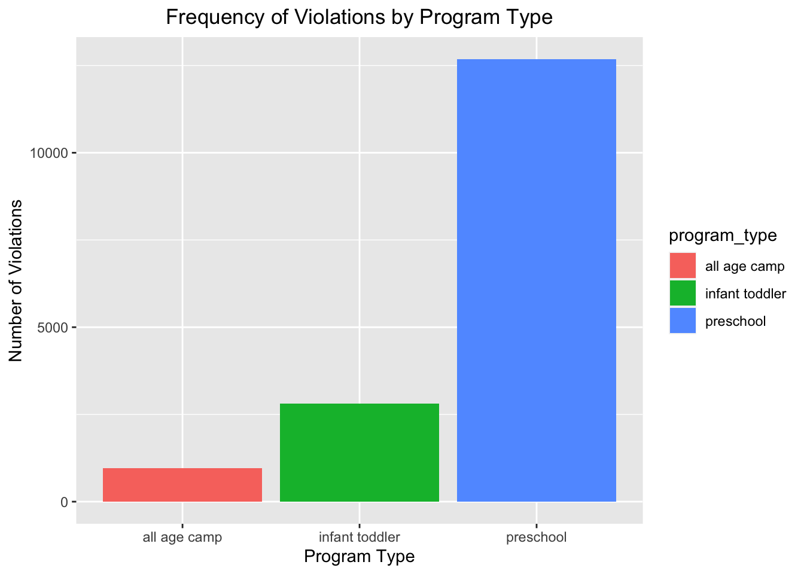
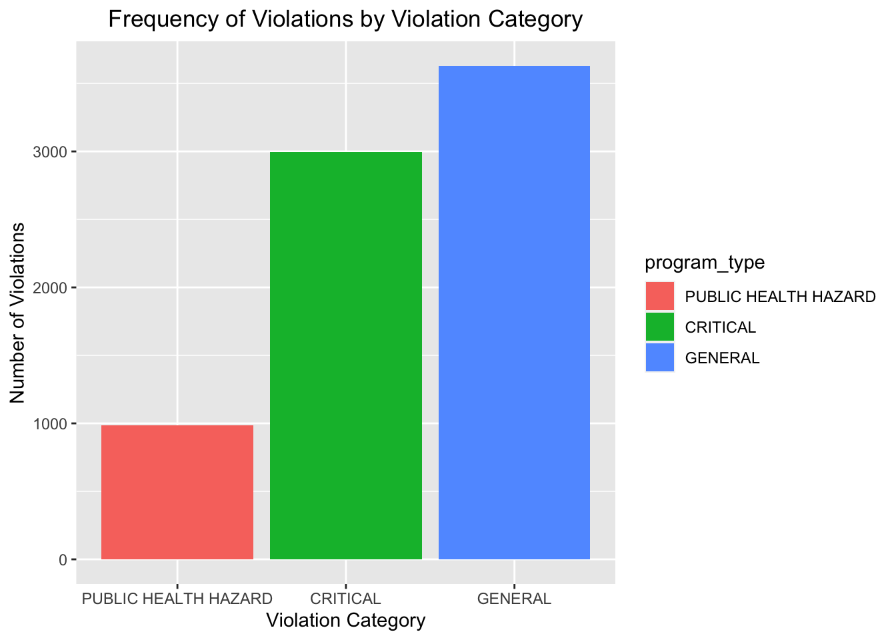

knitr::opts_chunk$set(
warning = FALSE,
message = FALSE)library(tidyverse)
library(dplyr)
library(rvest)
library(purrr)
library(ggplot2)
library(modelr)
library(mgcv)
library(patchwork)
library(viridis)
library(fastDummies)
set.seed(1)
childcare_inspection_df = read_csv("./data/DOHMH_Childcare_Center_Inspections.csv") %>%
janitor::clean_names() %>%
distinct() %>%
select(center_name, borough, zip_code, status, age_range, maximum_capacity,program_type, facility_type,
child_care_type, violation_category,
violation_status,violation_rate_percent:average_critical_violation_rate,regulation_summary,
inspection_summary_result) %>%
drop_na(zip_code, age_range, violation_rate_percent,public_health_hazard_violation_rate, critical_violation_rate) %>%
filter(maximum_capacity != 0) %>%
mutate(
educational_worker_ratio = total_educational_workers/maximum_capacity,
program_type = tolower(program_type),
facility_type = tolower(facility_type),
borough = as.factor(borough),
status = as.factor(status),
program_type = as.factor(program_type),
facility_type = as.factor(facility_type),
child_care_type = as.factor(child_care_type),
age_range = as.factor(age_range)
) %>%
filter(program_type != "school age camp")
center_specific_df = childcare_inspection_df %>%
relocate(center_name, program_type) %>%
group_by(center_name, program_type) %>%
mutate(
n_na = sum(is.na(violation_category)),
n_violation = sum(!is.na(violation_category)),
rate = n_violation/(n_violation + n_na)) %>%
arrange(center_name, program_type)frequency_program_type = childcare_inspection_df %>%
count(program_type) %>%
mutate(
program_type = fct_reorder(program_type, n)
) %>%
ggplot(aes(x = program_type, y = n, fill = program_type)) +
geom_bar(stat = "identity") +
labs(
title = "Frequency of Violations by Program Type",
x = "Program Type",
y = "Number of Violations",
fill = "program_type") +
theme(axis.text.x = element_text(angle = 0, hjust = 0.5),plot.title = element_text(hjust = 0.5))
frequency_program_type
frequency_violation_category = childcare_inspection_df %>%
drop_na(violation_category) %>%
count(violation_category) %>%
mutate(
violation_category = fct_reorder(violation_category, n)
) %>%
ggplot(aes(x = violation_category, y = n, fill = violation_category)) +
geom_bar(stat = "identity") +
labs(
title = "Frequency of Violations by Violation Category",
x = "Violation Category",
y = "Number of Violations",
fill = "program_type") +
theme(axis.text.x = element_text(angle = 0, hjust = 0.5),plot.title = element_text(hjust = 0.5))
frequency_violation_category 